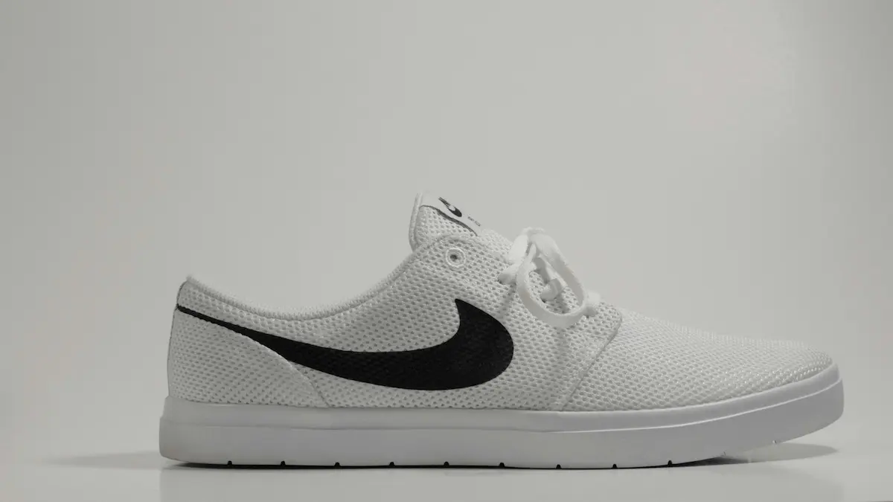

Taille inaproprie
Jean D.
4.5
Taille un peu petit, prendre une pointure au-dessus
115€

La Nike Air Force 1 associe une empeigne en cuir veritable robuste a une semelle en caoutchouc resistant.
Empeigne combinant cuir veritable et synthetique pour une robustesse maximale et un maintien parfait du pied.
Semelle intermediaire dotee de l'unite Nike Air encapsulee offrant un confort exceptionnel et une absorption des chocs au quotidien.
Livraison gratuite sur les commandes de plus de 50€ et un retour gratuit de 60 jours pour les membres.
Jean D.
4.5
Taille un peu petit, prendre une pointure au-dessus
Michel V.
4.7
Elles sont confortables et se portent pendant toute la journee